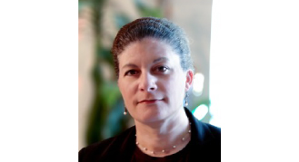

Cynthia Gayton
Founder of Gayton Law
http://www.gayton-law.com/
It was at the pre-party of #RareAF in January 2018, when we met Cynthia. She was introduced to us as 'lawyer who had an art gallery and hosts a crypto art podcast together with DJ J Scrilla'. Since then, Cynthia has accompanied us on our way through blockchain land.

What is the name by which blockchainart and cryptocollectibles community knows you?
Cynthia Gayton
Which company are you representing?
Gayton Law
What is your professional background and career?
Attorney and educator
Please give a short statement about yourself, your work, your art, your aesthetics, your vision, and everything else you want people to know about you as a person active in the blockchainart and cryptocollectibles space.
I have been working with artists and technologists for most of my professional career. Blockchain art is evolving and is several stages beyond when I first got into it. I think that so long as artists and developers (and even lawyers!) work together, some practical solutions to ongoing problems in the art world will be realized. That is a vision of mine - increased legal transaction transparency and reducing transaction risk.
Which is your medium?
Collage, oil
How would you describe your art?
Hmm. I like colors. I also like texture. I like tangible versus intangible. Eclectic is probably the right word.
Which artworks, artists and styles do you admire the most, and which shaped you the most?
There are too many to list here, but for overall artistic and professional depth, I would have to say cryptograffiti.
One of your recent artworks
https://steemit.com/artificial/@squizzi/parabola
What lead you to the blockchain?
Learning about smart contracts!
Since when are you active in the crypto space?
I have been involved most heavily on the crypto space since late 2016 while I became interested in bitcoin as an alternative to credit cards when I had my art gallery - 2011-2014.
What is your contribution to the blockchainart, cryptocollectibles and NFT field?
I have had seminars, meet-ups, articles, legal and consulting services in these related fields. I co-hosted a podcast as well as an FM radio show with J Scrilla, dedicated exclusively to crypto art and crypto music until earlier this year - 2019. I have sold my own physical art and have shown one piece at an art show for lawyers. This is the first year that I have offered for sale a crypto art piece.
Anything else you want the community to know?
Participate, get involved, shape your future.
Cynthia can be reached via these channels:
STEEMIT
Cynthia kindly answered all these questions by filling our portraits form on April 17, 2019. The portrait was published on www.blockchainart.directory on May 13, 2019.
Thank you very much indeed, Cynthia!